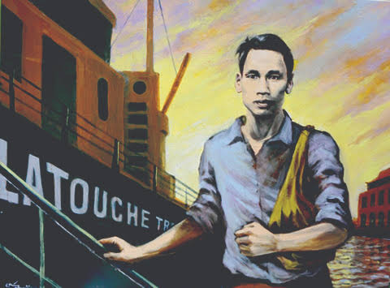
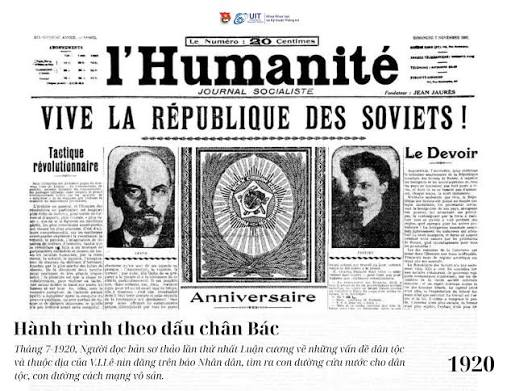
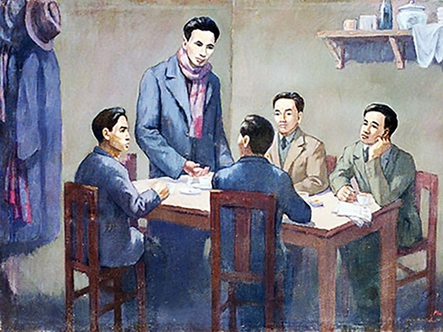

1911 — 1941
Ba Mươi Năm
Bôn Ba Tìm Đường
Cứu Nước
Hành Trình Của Một Dân Tộc
Nhấn góc trang để lật
Đang tải album...
Hành trình 1911 – 1941
1911 — 1941
Hành Trình Của Một Dân Tộc
Nhấn góc trang để lật

5 tháng 6 năm 1911
Nguyễn Tất Thành lên con tàu Amiral Latouche-Tréville tại Bến Nhà Rồng, bắt đầu hành trình ra thế giới với khát vọng tìm đường cứu nước.
1911 — 1919
Suốt 8 năm, Người đặt chân đến nhiều quốc gia ở châu Âu, châu Phi, châu Mỹ. Vừa lao động cật lực — làm phụ bếp, quét tuyết, chụp ảnh — vừa tìm hiểu cuộc sống người lao động và bản chất chủ nghĩa thực dân.

⭐ Bước ngoặt lịch sử
Tại Đại hội Tours (Pháp), Người đọc Luận cương về vấn đề dân tộc và thuộc địa của Lênin. Ánh sáng chủ nghĩa Mác – Lênin chỉ ra con đường đúng đắn cho cách mạng Việt Nam.
"Muốn cứu nước và giải phóng dân tộc, không có con đường nào khác con đường cách mạng vô sản."

03 tháng 02 năm 1930
Hội nghị thống nhất tại Hong Kong đánh dấu bước ngoặt lịch sử. Đảng Cộng sản Việt Nam ra đời, tạo nên lực lượng lãnh đạo thống nhất cho cách mạng dân tộc.
1941
Sau 30 năm xa xứ, Người về nước qua cửa khẩu Pác Bó (Cao Bằng), trực tiếp lãnh đạo phong trào cách mạng giải phóng dân tộc. Tại đây, Người xây dựng căn cứ địa cách mạng.
2 tháng 9 năm 1945
Tại Quảng trường Ba Đình, Chủ tịch Hồ Chí Minh đọc bản Tuyên ngôn Độc lập, khai sinh nước Việt Nam Dân chủ Cộng hòa — nhà nước dân chủ nhân dân đầu tiên ở Đông Nam Á.
"Nước Việt Nam có quyền hưởng tự do và độc lập, và sự thật đã thành một nước tự do, độc lập."
"Tôi chỉ có một sự ham muốn,
ham muốn tột bậc,
làm sao cho nước ta được
độc lập, dân ta được tự do..."
Hồ Chí Minh · 1911 — 1941
Nhấn góc trang hoặc dùng nút để lật · Vuốt trên mobile